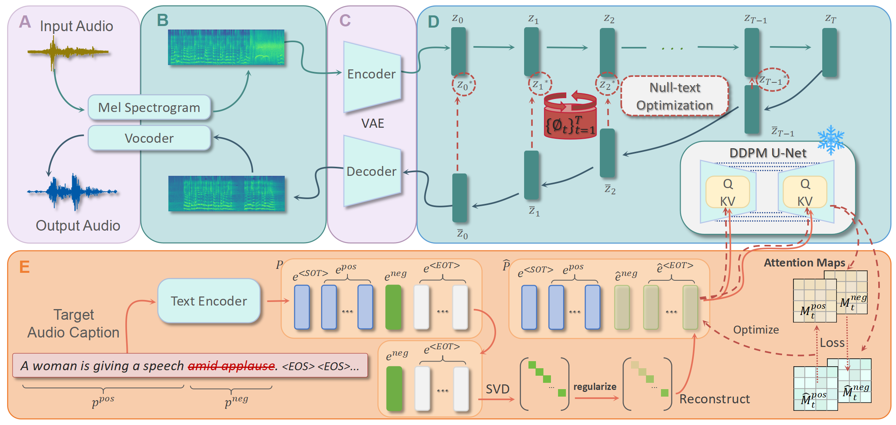

AudioEidtor: A Training-Free Diffusion-Based
Audio Editing Framework
Yuhang Jia1, Yang Chen1, JingHua Zhao1, Shiwan Zhao1
Wenjia Zeng2, Yong Chen2, Yong Qin1,*
1College of Computer Science, Nankai University, Tianjin, China
2Lingxi (Beijing) Technology Co., Ltd., Beijing, China
*Corresponding author
Abstract
Diffusion-based text-to-audio (TTA) generation has made substantial progress, leveraging Latent Diffusion Model (LDM) to produce high-quality, diverse and instruction-relevant audios. However, beyond generation, the task of audio editing remains equally important but has received comparatively little attention. Audio editing tasks face two primary challenges: executing precise edits and preserving the unedited sections. While workflows based on LDMs have effectively addressed these challenges in the field of image processing, similar approaches have been scarcely applied to audio editing. In this paper, we introduce AudioEditor, a training-free audio editing framework built on the pretrained diffusion-based TTA model. AudioEditor incorporates Null-text Inversion and EOT-Suppression methods, enabling the model to preserve original audio features while executing accurate edits. Comprehensive objective and subjective experiments validate the effectiveness of AudioEditor in delivering high-quality audio edits.

Figure 1: The overall workflow of AudioEditor. The workflow can be divided into 5 parts: A) audio space processing, B) spectrogram space processing, C) latent space processing, D) performing DDIM Inversion and Null-text Optimization, and E) performing EOT-suppression and Attention Loss updating.
Delete
| original |
|---|
| baseline1 | baseline2 | baseline3 |
|---|---|---|